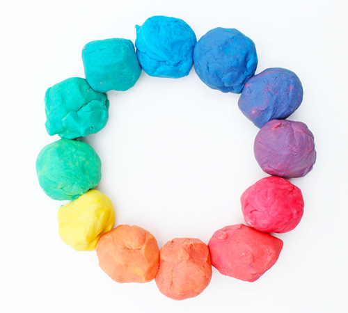

Chronicles Of A Young Mom
Home Page
Colored Playdough

Materials:
- 1 cup water
- 1 tablespoon vegetable oil
- 1/2 cup salt
- 1 tablespoon cream of tartar
- Food coloring
- Saucepan
- 1 cup flour
Instructions:
- Combine water, oil, salt, cream of tartar, and food coloring in a saucepan and heat until warm.
- Remove from heat and add flour
- Stir, then knead until smooth. The cream of tartar makes this dough last 6 months or longer, so resist the temptation to omit this ingredient if you don't have it on hand.
- Store this dough in an airtight container or a Ziploc freezer bag.